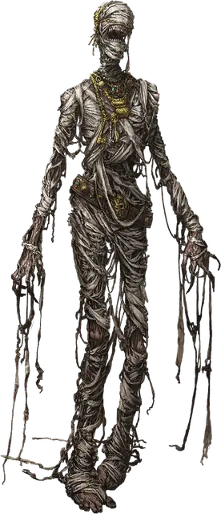

Мумия
Mummy
Средняя или Маленькая Нежить, Принципиальная Злая

Класс Защиты 11 Инициатива −1 (9)
Хиты 58 (9к8 + 18)
Скорость 20 футов
| мод | спас | ||
|---|---|---|---|
| СИЛ | 16 | +3 | +3 |
| ЛОВ | 8 | −1 | −1 |
| ТЕЛ | 15 | +2 | +2 |
| мод | спас | ||
|---|---|---|---|
| ИНТ | 6 | −2 | −2 |
| МДР | 12 | +1 | +3 |
| ХАР | 12 | +1 | +1 |
Уязвимость к урону Огонь
Иммунитеты Некротический, Яд; Испуганный, Истощение, Отравленный, Очарованный, Парализованный
Чувства Тёмное зрение 60 футов, пассивное Восприятие 11
Языки Общий плюс два других языка
Опасность 3 (700 опыта; БВ +2)
Действия
Мультиатака. Мумия совершает две атаки Кулаком разложения и использует Ужасающий взор.
Кулак разложения.. Бросок рукопашной атаки: +5, досягаемость 5 фт. Попадание: 8 (1к10 + 3) Дробящего урона плюс 10 (3к6) Некротического урона. Если цель — существо, она проклята. Пока цель проклята, она не может восстанавливать Хиты, её максимум Хитов не возвращается к нормальному значению после завершения Долгого отдыха, и её максимум Хитов снижается на 10 (3к6) за каждые прошедшие 24 часа. Существо умирает и рассыпается в пыль, если его Хиты уменьшаются до 0 этой атакой.
Ужасающий взор. Спасбросок Мудрости: Сл 11, одно существо, которое мумия видит в пределах 60 футов. Провал: Цель Испугана до конца следующего хода мумии. Успех: Цель получает иммунитет к Ужасающему взору этой мумии на 24 часа.
Бонус мастерства +2
Среда обитания Болота, Пустыня
Сокровища Реликварные
Мумии
Древние покойники с бессмертными амбициями
Мистические обряды, как и могущественная вера, могут привязать дух существа с его останками до скончания времён. Если покой их места упокоения будет нарушен, эти создания, называемые мумиями, поднимают свои разваливающиеся тела, чтобы наказать незваных гостей и восстановить святость гробницы.
Мумии преследуют тех, кто стал им врагом: обычно это смертные, осквернившие место упокоения, укравшие погребальные сокровища или повредившие священные атрибуты их веры. Охваченные неугасающей яростью древние мертвецы пойдут на всё, чтобы отомстить и вернуть себе покой.
Мумия только выглядит хрупкой: её тело обладает сверхъестественной силой, а взгляд способен вселить страх в самые храбрые сердца. Даже если кому-то удастся вырваться из крепкой хватки нежити, на него падёт страшное проклятие: жертва постепенно увядает, пока не станет кучкой праха. Такое проклятие можно излечить лишь с помощью заклинания Снятие проклятия или подобной магии.
Обычные мумии — останки жрецов, знати или поборников веры, погребённых в ходе магического обряда. Такие тела обычно пытаются сохранить с помощью льняных бинтов или глины; но встречаются и останки, сохранённые торфяными болотами или во льду, магией или другими способами.
Совершите бросок по таблице «Воскрешение мумии» или выберите причину возвращения мумии из мёртвых сами.
Воскрешение мумии
| к8 | Мумия оживает, чтобы... |
| 1 | Защитить священное место, для охраны которого она была создана. |
| 2 | Служить призвавшему её мумии-владыке. |
| 3 | Сразиться с воскресшим врагом. |
| 4 | Защитить своих потомков от угрозы из прошлого. |
| 5 | Наказать потомков того, кто наложил на неё проклятие. |
| 6 | Вернуть сокровища, похищенные из её склепа. |
| 7 | Служить тому, кто прочёл молитву на её могиле. |
| 8 | Убить любого узревшего её. |